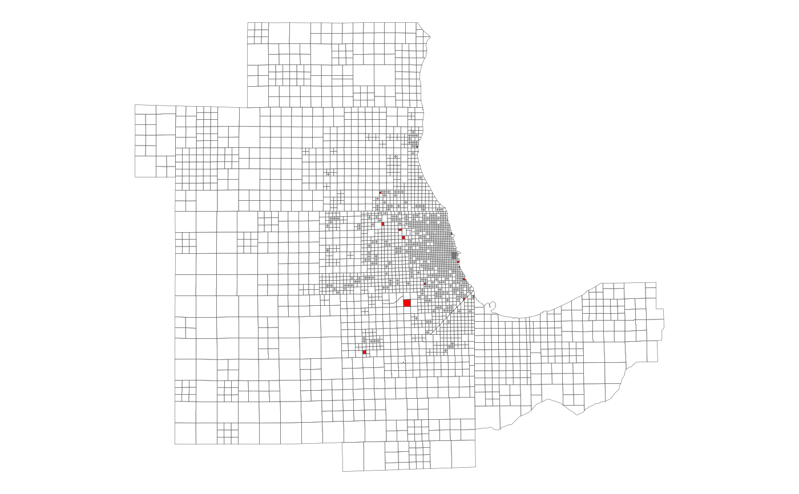

This table contains a set of factors to apportion Census tract-level data among the CMAP travel modeling zones. Separate factors are provided for apportioning housing unit, household, and population attributes. All factors were determined by calculating the percentage of a tract's housing units, households and population that were located in each of its component blocks, according to the 2010 Decennial Census, and then assigning each block to a zone (based on the location of the block's centroid point). Zones that do not contain the centroid of any blocks with at least one housing unit, household or person are not present in this table, and should be considered unpopulated.
xwalk_tract2zone
A tibble with 6910 rows and 5 variables:
Unique 11-digit tract ID, assigned by the Census Bureau.
Corresponds to tract_sf (although that only includes the tracts in the
7-county CMAP region). Character.
Numeric zone ID. Corresponds to zone_sf. Integer.
Proportion of the tract's housing units (occupied or vacant) located in the specified zone. Multiply this by a tract-level measure of a housing attribute (e.g. vacant homes) to estimate the zone's portion. Double.
Proportion of the tract's households (i.e. occupied housing units) living in the specified zone. Multiply this by a tract-level measure of a household attribute (e.g. car-free households) to estimate the zone's portion. Double.
Proportion of the tract's total population (including group quarters) living in the specified zone. Multiply this by a tract-level measure of a population attribute (e.g. race/ethnicity) to estimate the zone's portion. Double.
Other than in certain areas of Chicago, tracts tend to be larger than zones and have highly irregular boundaries, so in most cases the population, households and/or housing units in a tract are split across multiple zones. For that reason, it is not appropriate to use a one-to-one tract-to-zone assignment to apportion Census data among zones, and this crosswalk should be used instead.
To use this crosswalk effectively, Census data should be joined to it (not
vice versa, since tract IDs appear multiple times in this table). Once the
data is joined, it should be multiplied by the appropriate factor (depending
whether the data of interest is measured at the housing unit, household or
person level), and then the result should be summed by zone ID. If
calculating rates, this should only be done after the counts have been summed
to zone. The resulting table can then be joined to zone_sf for mapping, if
desired.
If your data is also available at the block group level, it is recommended
that you use that with xwalk_blockgroup2zone instead of the tract-level
allocation. If the zone geography is too coarse for your needs, you can use
subzones instead with xwalk_tract2subzone or xwalk_blockgroup2subzone.
#> # A tibble: 5 x 5 #> geoid_tract zone17 hu_pct hh_pct pop_pct #> <chr> <int> <dbl> <dbl> <dbl> #> 1 17031081800 55 0.00354 0.00392 0.00393 #> 2 17031081900 55 0.708 0.511 0.634 #> 3 17031838300 55 0.567 0.527 0.511 #> 4 17031842200 55 0.483 0.570 0.537 #> 5 17031842300 55 0.00176 0.00126 0.00216# Map the zones missing from xwalk_tract2zone (i.e. no HU/HH/pop) library(ggplot2) ggplot(dplyr::anti_join(zone_sf, xwalk_tract2zone)) + geom_sf(fill = "red", lwd = 0.1) + geom_sf(data = zone_sf, fill = NA, lwd = 0.1) + theme_void()#>